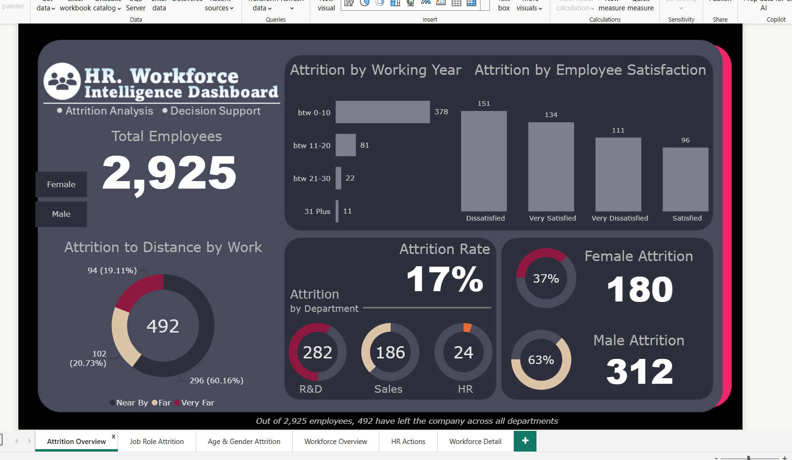
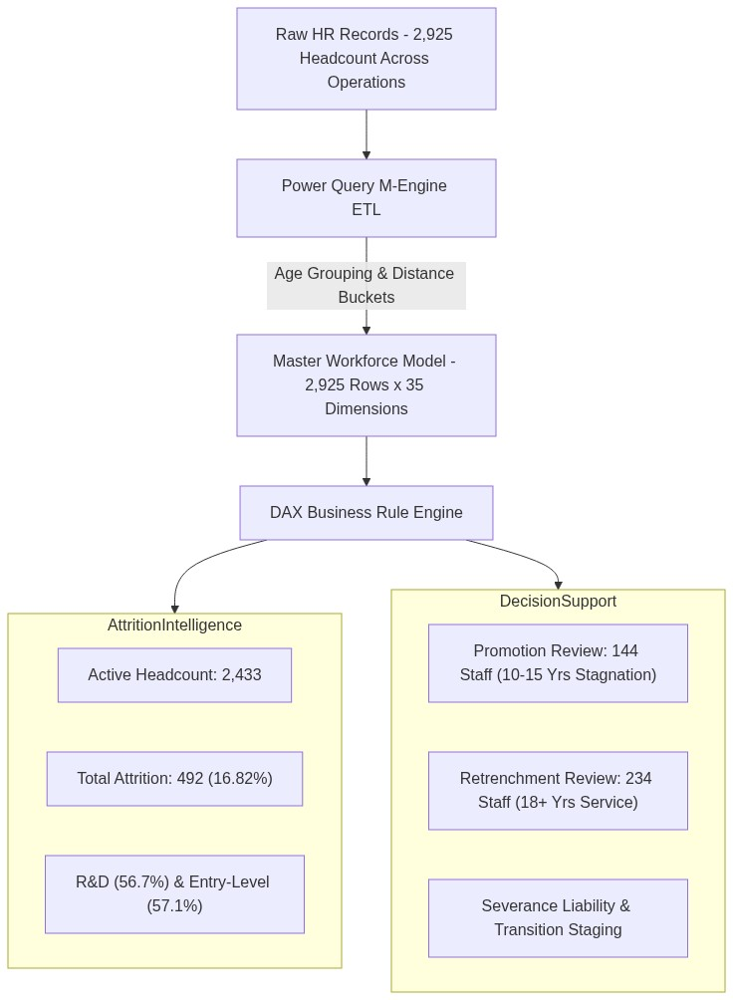

HR Workforce Intelligence & Decision Support Dashboard
Enterprise human capital analytics solution developed in Microsoft Power BI across a master population of 2,925 personnel. Integrates two foundational talent pillars: granular 16.82% (492 exits) attrition diagnostics across departments, roles, and tenure bands, coupled with an operational rule-based decision support engine surfacing objective screening cohorts for Promotion Reviews (144 staff) and Retrenchment Reviews (234 staff).
2,433 active personnel (83.2% operational retention rate).
492 employee exits (R&D drives 57.3% and Sales drives 37.8%).
Employees with 10–15 years since last advancement (high flight risk).
Extended service cohort (≥18 years at company) for succession review.
Executive 6-Page Interactive Talent Showcase
Interactive 5-second rotation cycling through Attrition Diagnostics, Role Headwinds, and Rule-Based Decision Lists.

Out of 2,925 total personnel, 492 departures establish an enterprise baseline attrition rate of 16.82%. R&D represents the primary vulnerability zone accounting for 57.3% (282 exits), followed by Sales at 37.8% (186 exits), with acute concentration in early career tenure (0–10 years).
Rule-Based Screening Filters & Operational Criteria
Automated talent screening parameters translating corporate HR governance guidelines into objective candidate pools for managerial review.
Promotion Stagnation Alert
Identifies experienced active personnel who have served between 10 and 15 years since their last promotion. Unchecked tenure stagnation without title or scope advancement creates acute flight risks among high-skill senior contributors.
Years Since Last Promotion >= 10 AND <= 15
Action: Prioritize for immediate talent council review, lateral leadership transfers, or salary scope realignment.
Retrenchment & Succession Cohort
Surfaces senior employees possessing 18 or more years of continuous company service. Forms the basis for organizational restructuring audits, voluntary separation schemes (VSS), and phased retirement knowledge transfer.
Years At Company >= 18
Action: Audit succession readiness and stage structured transition plans to prevent institutional knowledge loss.
Data Cleansing, Banding & Decision Engine Flow
End-to-end data pipeline transforming 2,925 raw human resource records across 35 dimensional attributes into an executive Power BI decision system.

Master Ingestion
Consolidates 2,925 employee records covering compensation, appraisal scores, tenure history, job roles, and commute distances.
Power Query Banding
Derives standardized analytical bands for Age Groups (18–25 through 56+), Commute Distance, and Years Since Last Promotion.
DAX Decision Logic
Implements strict string-predicate logic ([Promotion Status] = "1") to calculate candidate pools without type coercion errors.
Executive Reporting
Deploys 6 specialized interactive report pages supporting multi-dimensional cross-filtering by department, role, gender, and rating.
Workforce Decision Support & Attrition DAX Measures
DAX calculations engineered for strict type safety, dynamic headcount evaluation, and policy screening rates.
Total Employees = COUNTROWS('HR Master Data')
Total Attrition =
CALCULATE(
[Total Employees],
'HR Master Data'[Attrition] = "Yes"
)
Attrition Rate =
DIVIDE([Total Attrition], [Total Employees], 0)
-- Output: 16.82% (492 Exits across 2,925 Staff)Computes active versus departed headcount dynamics across all demographic and organizational filters.
Due for Promotion =
CALCULATE(
[Total Employees],
'HR Master Data'[Promotion Status] = "1"
)
Promotion % =
DIVIDE([Due for Promotion], [Total Employees], 0)
-- Output: 144 Candidates (4.92% of Staff)Filters staff waiting 10–15 years for advancement. Resolves string-typing mismatches with strict text evaluation.
Due for Retrenchment =
CALCULATE(
[Total Employees],
'HR Master Data'[Retrenchment Status] = "1"
)
Retrenchment % =
DIVIDE([Due for Retrenchment], [Total Employees], 0)
-- Output: 234 Candidates (8.00% of Staff)Isolates senior staff with ≥18 years service for restructuring analysis and severance budgeting.
Active Employees =
CALCULATE(
[Total Employees],
'HR Master Data'[Attrition] = "No"
)
Active Retention % =
DIVIDE([Active Employees], [Total Employees], 0)
-- Output: 2,433 Personnel (83.18% Active Base)Serves as the clean denominator for operational headcount ratios and workforce productivity calculations.
Data-Driven Human Capital Interventions
Actionable organizational strategies formulated to stem high-turnover role attrition and de-risk talent progression pipelines.
R&D Lab Tech Compensation
Conduct urgent industry wage benchmarking for Laboratory Technicians and Research Scientists, who account for 57.3% of all exits.
Prioritize 144 Stagnant Staff
Fast-track the 144 personnel stuck 10–15 years without advancement into leadership review councils to prevent immediate high-cost resignation.
Succession & Knowledge Transfer
Formulate structured phased retirement schemes for the 234 senior veterans (≥18 yrs tenure) ensuring institutional lore is preserved.
Junior Tenure Pathways
Implement structured 18-month career progression steps for junior employees to arrest the acute attrition cliff in years 0 to 10.